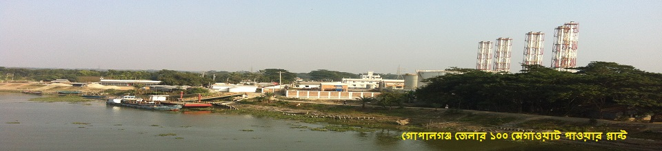
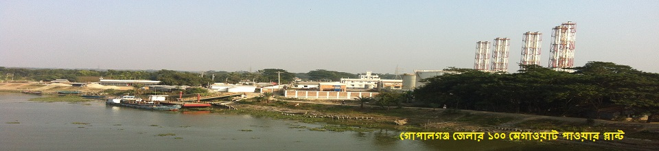

Administration: Gopalganj district consists of 5 upazilas (previously known as 'Thana or Police Station'
which is essentially a sub-district) namely Gopalganj Sadar, Kotalipara, Kashiani, Muksudpur, and Tungipara; 4 Pourashavas/
Municipalities namely Gopalganj (Class A), Tungipara (Class B), Kotalipara (Class B) & Muksudpur (Class C) and 68 unions.
The main township is known as Gopalganj Sadar, which consists of 9 wards and 49 mahallas. Gopalganj municipality was constituted
in 1972. It has an area of 8.59 km² and a population of 40,987; male 53.27%, female 46.73% with a population density of 4,771 per km².
Administrator of Zila Porishod: Choudhury Emdadul Haq.
Deputy Commissioner (DC): Sarker Mukhlesur Rahman.
Subdivisions:
1. Gopalganj Sadar Upazila
2. Kashiani Upazila
3. Kotalipara Upazila
4. Muksudpur Upazila
5. Tungipara Upazila
Education: The district has 21 colleges, 181 high schools and 760 primary schools. Other notable educational institutions are as follows:
1. Bangabandhu Sheikh Mujibur Rahman Science and Technology University
2. Govt. Bangabandhu University College
3. Gaohardanga Madrasa (historical Madrasa in southern part of Bangladesh)
4. Sheikh Fazilatunnesa Govt. Mohila College
5. Hazi Laal Mia City College
6. S.M. Model Govt. High School
7. Sheikh Russel Destitute Children Training and Rehabilitation Center at Tungipara
8. Bangabandhu Poverty Reduction Training Complex
9. sheikh Hasina girls school and college
Religion: The district of Gopalganj has 356 mosques, 359 temples, 250 churches and 4 tombs.
Places of interest: Ulpur has a former Zamindar palace which is currently
used a Tafsil Office. There are also many other Zamindar mansions from Mughal and British era. Arpara has a
zamindar palace of former zaminder Munshi Abdur Razzak Chowdhury. Orakandi Thakur Bari in Kashiani, Anyanya
Chandra Ghat in Sadar and zaminder Girish Chandra Sen's palace in Bhatiapara of Kashiani are some other
historically notable places.
Father of the Nation Bangabandhu Sheikh Mujibur Rahman's Mausoleum Complex,
Boddhyo Bhumi Memorial, Court Mosque, Gaohor Danga Madrasa, Madhumati riverbank developed in 2014, Bornir
Baor, Sheikh Kamal International Stadium complex (including a state of the art swimming pool and gymnasium)
and Tangrakhola Bazar are some other places of attraction.
Water bodies:
1. Rivers: Garai, Modhumoti, Kaliganga, Madaripur Beel route channel, Hunda, Ghagore and Old Kumar rivers.
2. Large Water Bodies/Beel/Haor/Baor: Borni Baor, Chandar beel and Baghyar beel.